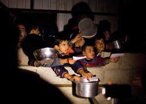
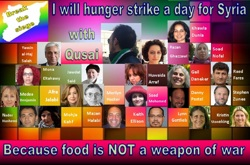

Dear Friends,
Right now I am standing outside the U.N. headquarters in New York City, helping launch the International Solidarity Hunger Strike for Syria.
This week and next, FOR leaders -- including Kristin Stoneking, Lynn Gottlieb, Rabia Terri Harris, John Lindsay-Poland, Shauen Pearce, Ethan Vesely-Flad, and me -- are participating in the global fast in support of the Syrian people who demand an end to the starvation siege of dozens of Syrian towns.
In support of the Syrian nonviolence movement, let us proclaim their poignant statement that “Food is not a weapon.” Please join us by committing to fast for one day this month for the besieged people of Syria. See resources below.
I am fasting today in solidarity with my Arab, Kurdish, and Armenian brothers and sisters in Syria who have been under siege. Today I will not drink and eat by my choice, but in solidarity with my Shi'a, Sunni, Druze, Jewish, and Christian sisters and brothers who have been prevented from any access to food and medicine.
Let us be a megaphone for the voice of our Syrian brothers and sisters. We together must break this inhumane siege on civilians. Today I am Syrian; let us together be the voice of Syria.
Fasting as a spiritual discipline has a long history. And it has been used for generations as a method to nonviolently resist occupation, oppression, and political hegemony. Mohandas Gandhi famously fasted as a form of civil disobedience, and FOR published this essay by the Mahatma in 1933, "Why I Fasted for Twenty-one Days" (PDF download), to describe his political and spiritual reasons for doing so.
Religious communities use fasting for diverse reasons, as described in these three new reflections written by FOR leaders from the Abrahamic faiths. We are reminded that fasting can be a form of supplication, of refuge, of lament, of remorse:
Today, I am fasting in support of Syria's nonviolence movement and as part of the international solidarity movement that has chosen to hunger strike as a method of nonviolent resistance. I am honored to continue this tradition of peace people at a vigil and press conference this morning, alongside leaders from Human Rights Watch, the Syrian American Medical Society, the Syrian Nonviolence Movement, the Interfaith Center of New York, Friends for a Nonviolent World, and other allies.
The tradition of the Fellowship of Reconciliation is to stand with the oppressed and those whose voices have been silenced. For 100 years, FOR has advocated for peace, justice, and reconciliation through nonviolent efforts and means. In response to the humanitarian catastrophe in Syria, we launched a campaign to free Syrian nonviolent political prisoners in 2012, and we now enter into a new phase of solidarity with the people of Syria.
Today we stand with Syrian nonviolent activists who have loudly and clearly cried out for support. As hunger striker Qusai Zakarya says, “Your support is my only weapon.”
And with the forthcoming "Geneva II" talks scheduled to begin on January 22, now is a critical time to call on our political leaders to act. Use talking points from this draft letter to communicate to members of Congress the urgent need for humanitarian aid, and to declare your opposition to any U.S. military intervention in Syria. Sign this Avaaz petition to call on Bashar al-Assad to break the siege on Syrian civilians.
Please act today to urge all parties responsible for the catastrophe in Syria to provide immediate access to humanitarian aid across borders and into cities.
Human beings are member of a whole,
In creation of one essence and soul
If one member is afflicted with pain
Other members uneasy will remain
If you’ve no sympathy for human pain
The name of human you cannot retain
(Saadi, Persian Poet, 13th century)
In peace,
Leila Zand
Northeast Regional Coordinator/Organizer
Fellowship of Reconciliation
Images 1 & 3 courtesy of International Solidarity Hunger Strike campaign. Image 2 of Mohandas & Indira Gandhi in public domain, from a picture given by Gujarat Vidyapith, Ahmedabad. |